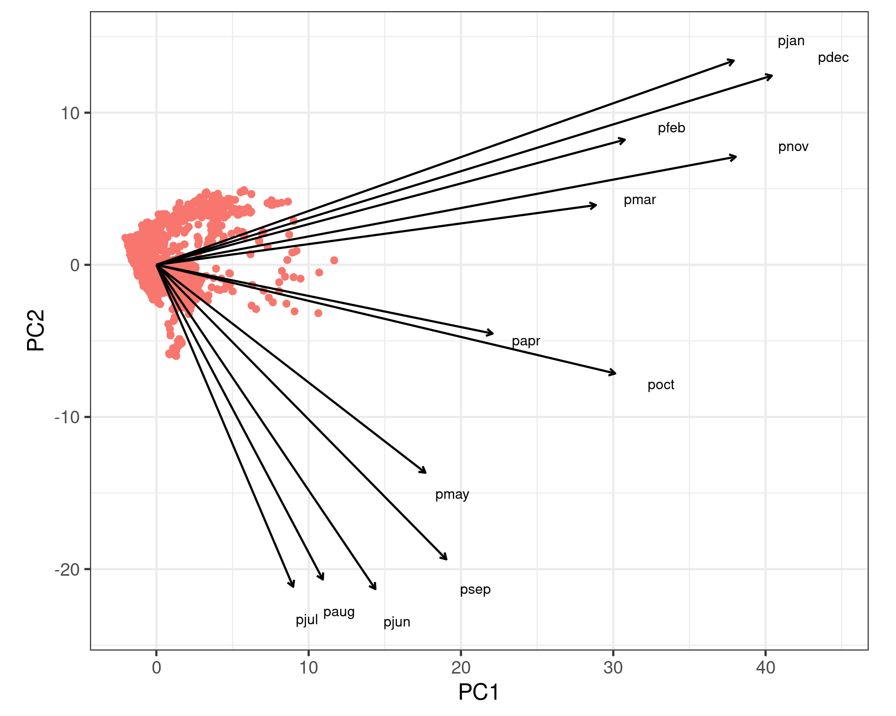

inst time status age sex ph.ecog ph.karno pat.karno meal.cal wt.loss
1 3 306 2 74 1 1 90 100 1175 NA
2 3 455 2 68 1 0 90 90 1225 15
3 3 1010 1 56 1 0 90 90 NA 15
4 5 210 2 57 1 1 90 60 1150 11
5 1 883 2 60 1 0 100 90 NA 0
6 12 1022 1 74 1 1 50 80 513 0
7 7 310 2 68 2 2 70 60 384 10
8 11 361 2 71 2 2 60 80 538 1
9 1 218 2 53 1 1 70 80 825 16
10 7 166 2 61 1 2 70 70 271 34Survival analysis and Multivariate methods
Bio300B Lecture 11
Richard J. Telford (Richard.Telford@uib.no)
Institutt for biovitenskap, UiB
29 October 2024
Survival analysis
How long (or far) until an event happens
- How long before a seed germinates
- How long before a patient dies after diagnosis
- How many jumps can a horse clear at a racecourse
Data are typically right censored.
survival package
Survival data
Response data
- time
- status (alive/dead coded as 0/1, 1/2 TRUE/FALSE)
Survival response
+ indicates censored data
[1] 306 455 1010+ 210 883 1022+ 310 361 218 166 170 654
[13] 728 71 567 144 613 707 61 88 301 81 624 371
[25] 394 520 574 118 390 12 Fitting a model
lung <- lung |>
mutate(sex = factor(sex, levels = 1:2, labels = c("male", "female")))
mod_surv <- survfit(Surv(time, status) ~ sex, data = lung)
mod_survCall: survfit(formula = Surv(time, status) ~ sex, data = lung)
n events median 0.95LCL 0.95UCL
sex=male 138 112 270 212 310
sex=female 90 53 426 348 550Plotting a model
- Kaplan-Meier curve
- ‘+’ mark censored data
Testing differences in survival time
- between two or more groups
Survivorship curve
Shape of the survival curve

Hazard: The instantaneous risk of death
Call:
survreg(formula = Surv(time, status) ~ age + sex, data = lung,
dist = "loglogistic")
Value Std. Error z p
(Intercept) 6.39982 0.49256 12.99 < 2e-16
age -0.01401 0.00771 -1.82 0.06946
sexfemale 0.47751 0.14036 3.40 0.00067
Log(scale) -0.56991 0.06543 -8.71 < 2e-16
Scale= 0.566
Log logistic distribution
Loglik(model)= -1152.9 Loglik(intercept only)= -1160.9
Chisq= 16.07 on 2 degrees of freedom, p= 0.00032
Number of Newton-Raphson Iterations: 4
n= 228 Exponentiated coefficients show relative increase or decrease in the expected survival times when a covariate is increased one step while others are fixed:
Expected survival time decreases by 1.4 % (i.e. multiply by 0.986) for each additional year of age
Expected survival time for females is 61.2 % higher than for males (multiply by 1.612).
scale
The scale parameter < 1, indicates that slope of the hazard decreases with time - Type III
Choice of distribution
| Distribution | df |
|---|---|
| exponential | 1 |
| Weibull | 2 |
| lognormal | 2 |
| log logistic | 2 |
Can use AIC to choose best
Mixed effect survival analysis
Survival of nestlings in nests
- nest is a random effect
coxme package
Cox mixed-effects model fit by maximum likelihood
Data: lung
events, n = 163, 226 (2 observations deleted due to missingness)
Iterations= 18 75
NULL Integrated Fitted
Log-likelihood -739.375 -729.7294 -727.0504
Chisq df p AIC BIC
Integrated loglik 19.29 3.00 2.3800e-04 13.29 4.01
Penalized loglik 24.65 4.48 9.7942e-05 15.69 1.83
Model: Surv(time, status) ~ ph.ecog + age + (1 | inst)
Fixed coefficients
coef exp(coef) se(coef) z p
ph.ecog 0.47319522 1.605115 0.119179189 3.97 7.2e-05
age 0.01139445 1.011460 0.009430508 1.21 2.3e-01
Random effects
Group Variable Std Dev Variance
inst Intercept 0.14695545 0.02159591Multivariate data
All methods so far - single response variable
Multivariate statistics - multiple response variable
- plant species abundances
- physical & chemical measurements
- climate data
Ordinations, cluster analysis
Correlation matrices
Ordinations
- make sense of multivariate data by focusing on main axes of variability
- separate signal from noise
Several methods appropriate for different types of data
- principal components analysis
- correspondence analysis
- non-metric multidimensional scaling
Principal components analysis
Principal components analysis in R
Implemented in several packages
Screeplots
- Show length of each eigenvector
- Can help decide how many axes to interpret
- Can use broken stick null model to help decide

Plotting the PCA

Interpreting the plot
- dots are observations (sites)
- dots close together are similar
- arrows are variables
- arrows point in direction of increasing values
- arrows close together are correlated
- arrow length shows importance on axes shown

Artefacts
- PCA assumes linear relationships between variables
- appropriate for most environmental data
- can fail with species data on long gradients